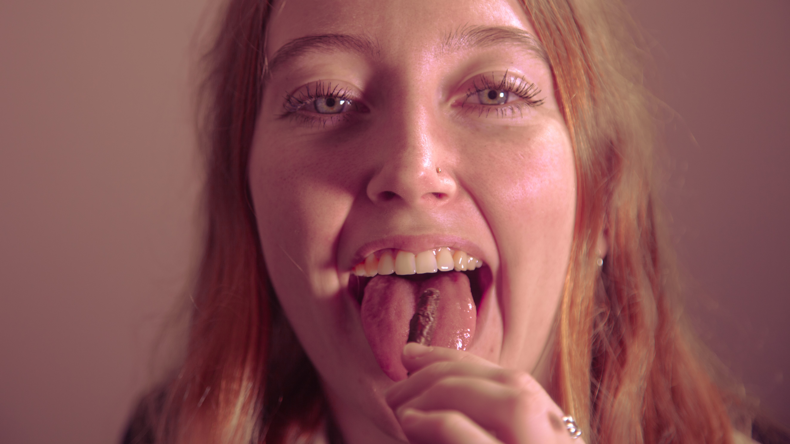
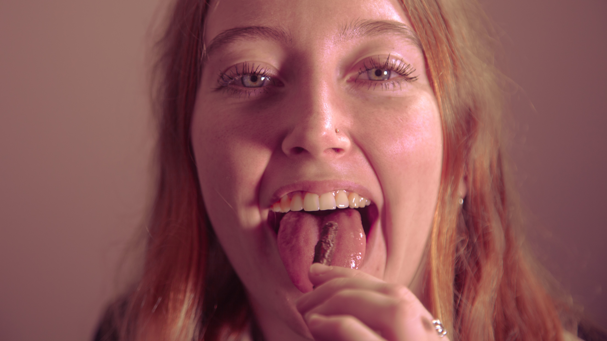

Would you eat bugs? Most people wouldn't. Here in New Zealand, they're perceived as gross, dirty, and outright disgusting. In other cultures, they're much more common. Perhaps even a treat. The issue isn't the bugs. They are really good for us! They've got more calcium and milk and they're packed with protein. Also, they only leave behind a micropsopic carbon footprint when compared to alternative proteins like beef and chicken. The issue is our culture and 'food neophobia.' That's the fear of trying new foods. Bugs need a rebrand. What if they were sexy? Romanticised. This awareness campaign hopes to turn you on to the idea on chowing down on some juicy crickets and scrumptious scropions.


 

Return to home page